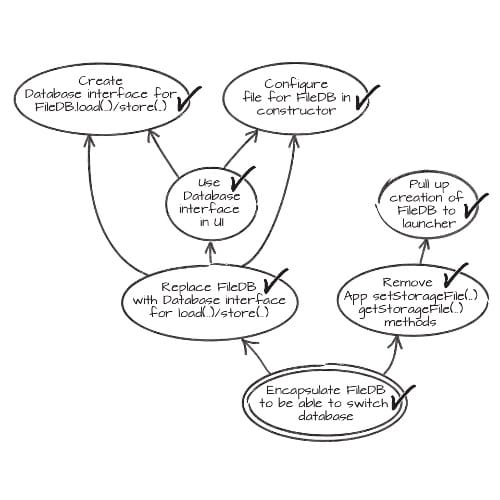

We write tons of legacy code everyday. Experienced developers understand that legacy code is not something special. Legacy code is our daily bread and butter.
Should we abandon all hope as we enter legacy code ? Would that be professional ? In the end, code is only a bunch of bytes, somewhere on a drive. We are the software professionals. We need to deal with that.
1. Master non legacy refactoring first
Please calm down before this “Bring ‘em out” energy goes to your head.
I did not say that refactoring legacy code is easy. Legacy code can bite … bad. I’ve been in teams which literally spent nights fixing a bad refactoring gone to production …
Before you can refactor legacy code, you need to be good at refactoring new code. We all learned to swim in the shallow pool, it’s the same with refactoring. Mastering green code refactoring will help you when tackling legacy code.
First, you’ll know the ideal you’d like to get to. Knowing how productive a fast feedback loop is will motivate you to keep on refactoring.
Second, you’ll have a better idea of the baby steps to take you through a tricky refactoring.
If you are not yet at ease with greenfield refactoring, have a look at my previous post.
2. Understand that refactoring legacy code is different
The next thing to remember is that refactoring legacy code is different. Let’s assume Michael Feather’s definition of legacy code : “Code without tests”. Getting rid of legacy code means adding automated tests.
Unfortunately, trying to force push unit tests in legacy code usually results in a mess. It introduces lot’s of artificial mocks in a meaningless design. It also creates brittle and unmaintainable tests. More harm than good. This might be an intermediate step, but it is usually not the quickest way to master your legacy code beast.
Here are alternatives I prefer.
3. Divide and conquer
This is the most straightforward way to deal with legacy code. It’s an iterative process to repeat until you get things under control. Here is how it goes :
(1) Rely on the tests you have, (2) to refactor enough, (3) to test sub-parts in isolation. (4) Repeat until you are happy with the speed of the feedback loop.
Depending on the initial state of your tests, this might take more or less time. Your first tests might even be manual. This is the bulldozer of refactoring. Very effective, but slow.
4. Pair or mob program
Given enough eyeballs, all bugs are shallow.
Changing legacy code is a lot easier when you team up. First, it creates a motivating “we’re all in this together” mindset. Second, it guards us against silly mistakes.
Mob programming, might seem very expensive, so let me explain why it is not. Suppose you want to introduce some tests in a tricky section of code.
With mob programming, all the team gathers for half a day to work on this change. Together, they find and avoid most of the pitfalls. They commit a high quality change, which creates only one bug down the road.
Let’s see the alternative.
Using solo programming, a poor programmer tries to tackle the change all by himself. He spends a few days to understand and double check all the traps he can think of. Finally, he commits his change, which results in many bugs later on. Every time a bug pops up, it interrupts someone to fix it ASAP.
The savings in interruptions are greater than up front cost of mob or pair programming.
5. Seams
A software seam is a place where you can alter behavior in your program without editing in that place.
This is one of the many interesting things I learned from Michael’s book about legacy code.
Object polymorphism is only one kind of seam. Depending on your language, many other types of seams can be available.
- Type seam for generic languages
- Static link seam for static libraries
- Dynamic link seam for dynamic libraries
- …
Finding seams in your program is something opportunistic. Keep in mind though that testing through seams is not the end goal. It is only a step to bootstrap the test-refactor loop and start your refactoring journey.
6. Mikado Method
How do you get to your end then ? How to you refactor only what’s useful for your features ? How do you do large refactorings in baby steps ?
Over time, I found that the mikado method is a good answer to all these issues. The goal of the Mikado Method is to build a graph of dependent refactoring. It can then use it to perform all these refactorings one by one. Here is the mikado method by the book.
Before anything else, you’ll need a large sheet of paper to draw the graph. Then repeat the following :
- try to do the change you want
- If it builds and the tests pass, great, commit and you’re done
- Otherwise, add a node for the change you wanted to do in your mikado graph
- Write down the compilation and test errors
- Revert your change
- Recurse from 1 for every compilation or test error
- Draw a dependency arrow from the nodes of errors to the node of your initial change
Once you built the full graph, tackle the refactorings from the leaves. As leafs have no dependencies, it should be easy to do and commit them.

When I first read about the mikado method, it seemed very simple and powerful. Things got more complex when I tried to apply it. For example, the fact that some changes don’t compile hide future test failures. That means that very often, the “Build the graph” and “Walk the graph” phases overlap. In real life, the graph evolves and changes over time.
My advice about the Mikado Method is not to take it to the letter. It’s a fantastic communication tool. It helps not to get lost and to avoid a refactoring tunnel. It also helps to tackle refactoring as a team.
It is not a strict algorithm though. Build and tests are not the only way to build the graph. Very often, a bit of thinking and expert knowledge are the best tools at hand.
7. Bubble Context
Refactoring needs to be opportunistic. Sometimes there are shortcuts in your refactoring path.
If you have access to a domain expert, the Bubble Context will cut the amount of refactoring to do. It’s also an occasion to get rid of all the features that are in your software but that are not required anymore.
The Bubble Context originated from the DDD community, as a way to grow a domain in an existing code base. It goes like that :
- Find a domain expert
- (Re)write clean code for a very tiny sub domain
- Protect it from the outside with an anticorruption layer
- Grow it little by little
I have friends who are fans of the bubble context. It is super effective provided you have a domain expert. It is a method of choice in complex domain software.
8. Strangler
Bubble Context works great when refactoring domain specific code, what about the rest ? I had good results with the Strangler pattern.
For example, we had to refactor a rather complex parser for an internal DSL. It was very difficult to incrementally change the old parser, so we started to build a new one aside. It would try to parse, but delegate to the old one when it failed. Little by little, the new parser was handling more and more of the grammar. When it supported all the inputs, we removed the old one.
The strangler is particularly well suited for refactoring technical components. They have more stable interfaces and can be very difficult to change incrementally.
9. Parallel Run
This is more of a trick than a long term strategy. The idea is to use the initial (legacy) version of the code as a reference for your refactoring. Run both and check that they are doing the same thing.
Here are some variations around this idea.
If the code you want to refactor is side effect free, it should be easy to duplicate it before refactoring. This enables running both to check that they compute the same thing.
Put this in a unit test to bootstrap a test-refactor loop. You can also run both in production and log any difference. You’ll need access to production logs … Devops teams have a refactoring advantage !
Here is another use of your logs. If the code writes a lot of logs, we can use them as a reference. Capture the logs of the old version, and unit test that the refactored version prints the same logs out. That’s an unmaintainable test, but good enough to bootstrap the test-refactor loop.
The Gilded Rose kata is a good exercise to practice this last technique.
10. Dead code is better off dead
You don’t need to refactor dead code ! Again, access to production logs is a great advantage for refactoring.
Add logs to learn how the real code runs. If it’s never called, then delete it. If it’s only called with some set of values, simplify it.
No silver bullet
That was a whirlwind tour of the legacy code refactoring techniques I know. It’s no promise that refactoring will become easy or fast. I hope it is a good starting point to set up and walk a refactoring plan.
This was the last post of a series of 3 about how to learn refactoring techniques. If you didn’t already, check part 1 7 Reasons Why Learning Refactoring Techniques Will Improve Your Life as a Software Engineer and part 2 How to Start Learning the Tao of Incremental Code Refactoring Today.